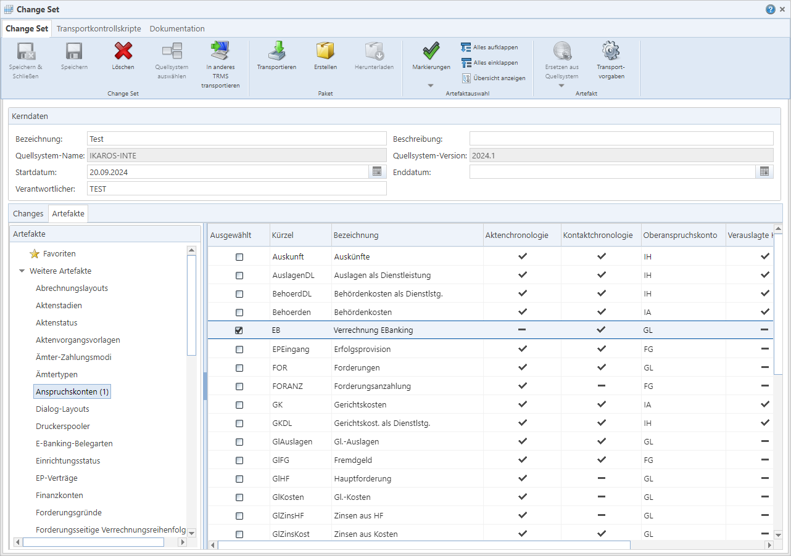

Der Dialog des Artefaktpaket-Assistenten

Abb. 9: Der Dialog des Artefaktpaket-Assistenten
(erweiterter Modus)
 Textfeld „Bezeichnung“ [*]: Ein
maximal 50 Zeichen langer, eindeutiger Name für den Change/das Change Set.
Dieser Name erscheint in den diversen Listen für Changes/Change Sets. Zudem wird
die Bezeichnung in den Namen der Paketdatei, die für den Transport generiert
wird, aufgenommen.
Textfeld „Bezeichnung“ [*]: Ein
maximal 50 Zeichen langer, eindeutiger Name für den Change/das Change Set.
Dieser Name erscheint in den diversen Listen für Changes/Change Sets. Zudem wird
die Bezeichnung in den Namen der Paketdatei, die für den Transport generiert
wird, aufgenommen.
Textfeld „Beschreibung“ [*]:
Eine Beschreibung für den Change/das Change Set. Sie wird z. B. im Dialog für
Transportaufträge angezeigt.
Textfeld „Quellsystem-Name“:
Der Name des Systems (gemäß den „Systeme“-Stammdaten im TRMS), dessen Artefakte
im Artefaktpaket-Assistenten angeboten werden. Sie können den Wert hier nicht
ändern, er wird nach der Anmeldung an ein System (bei Start des
Artefaktpaket-Assistenten bzw. nach Ausführen von „Quellsystem wählen“)
automatisch eingetragen.
Textfeld „Quellsystem-Version“:
Der IKAROS-Versionsstand, auf dem sich das Quellsystem gemäß den
„Systeme“-Stammdaten des TRMS befindet. Wird bei der Anmeldung aus der Datenbank
des Quellsystems ermittelt und kann nicht bearbeitet werden. Es handelt sich um
die Versionsnummer zum Zeitpunkt der Paketdateierstellung.
Datumsfeld „Startdatum“ [*]:
Dient als organisatorischer Hinweis, wann Sie mit der Zusammenstellung dieses
Changes/Change Sets begonnen haben. Das Datum hat derzeit keine technischen
Auswirkungen.
Datumsfeld „Enddatum“ [*]: Dient
als organisatorischer Hinweis, wann die Arbeiten an dem Change/Change Set als
abgeschlossen gelten sollen. Das Datum hat derzeit keine technischen
Auswirkungen.
Textfeld „Verantwortlicher“
[*]: Eine maximal 50 Zeichen lange Zeichenkette. Beispielsweise um festzuhalten,
wer für die Zusammenstellung des Artefaktpakets technisch oder fachlich
verantwortlich ist.
[*] Diese Felder sind nur im erweiterten
Artefaktpaket-Assistenten unter „Changes“ und „Change Sets“ verfügbar.
Der Rahmen „Artefakte“ enthält eine Baumansicht aller
Artefakt-Gruppen und darin der unterschiedlichen Artefakt-Typen, aus denen Sie
einzelne Artefakte auswählen können [Link]. Aus allen ausgewählten Artefakten ergibt
sich die individuelle Zusammenstellung des Artefaktpakets.
Hinweis: Es ist nicht
möglich, im selben Paket Artefakte aus mehreren Quellsystemen zusammenzustellen.
Es stehen immer nur die Artefakte aus dem aktuell gewählten Quellsystem zur
Auswahl.
Wenn Sie einen Knoten anklicken, wird in der Auswahlliste
rechts neben der Baumsicht die Liste mit allen individuellen Artefakten des
jeweiligen Typs geladen.
Die Anzahl der als „Ausgewählt“ markierten Artefakte dieses
Typs wird in der Baumansicht in Klammern neben der Artbezeichnung angezeigt (z.
B. „Kontaktvorgangsvorlagen (6)“).
Artefakt-Typen und -Gruppen als Favoriten
markieren
In der Baumansicht der Artefakt-Gruppen und -Typen können Sie
einzelne Arten oder auch ganze Gruppen als Favoriten markieren, indem Sie einen
Rechtsklick auf den gewünschten Eintrag machen und im Kontextmenü der
Baumansicht den Eintrag „Zu Favoriten
hinzufügen“ wählen. Wenn der Eintrag bereits ein Favorit ist,
bleibt der Punkt im Kontextmenü für ihn ausgegraut.

Abb. 10: Einen Artefakt-Typ den Favoriten hinzufügen
Um einen Eintrag aus den Favoriten zu löschen, machen Sie
einen Rechtsklick auf den entsprechenden Eintrag unter „Favoriten“ und wählen
„Aus Favoriten
entfernen“.
Das Hinzufügen und Entfernen von Favoriten wird sofort
übernommen, wobei die Favoritenzusammenstellung für jeden Benutzer individuell
in der TRMS-Datenbank gespeichert ist.
Rahmen mit der Listenansicht der
Artefakte
Die Listenansicht in diesem Rahmen enthält alle Artefakte des
in der Baumansicht gewählten Artefakt-Typs. Sie können durch Klick auf das
Kontrollkästchen in der Spalte „Ausgewählt“
festlegen, ob das Artefakt im Paket enthalten sein soll oder nicht.
Sie können das Häkchen auch mit den Schaltflächen „Gemäß
Filter setzen“ und „Gemäß Filter entfernen“ massenhaft in dem geöffneten
Artefakt-Typ setzen bzw. entfernen.
Sobald ein Artefakt angehakt ist, können Sie individuell für
dieses mit der Schaltfläche „Transportvorgaben“ einen Dialog öffnen, wo Sie die
Einstellungen für sowohl für die Paketgenerierung aus dem Quellsystem als auch
die Installation im Zielsystem für dieses Artefakt einstellen können.
Hinweis zur Reihenfolge von Artefakten
Beim Auswählen von Artefakten müssen Sie nicht auf eine
bestimmte Reihenfolge achten (außer bei „Datenmodell“-Artefakten und
„Workflow-Aktualisierungs-Paketen“ untereinander [Link]).
Das TRMS stellt beim Verpacken der Artefakte automatisch
sicher, dass die technisch notwendige Reihenfolge z. B. von Workflow-Paketen und
darin vorausgesetzten Vorgangsvorlagen, sichergestellt ist. Somit ist es z. B.
möglich, sowohl neue Vorgangsvorlagen als auch Workflows, die diese einbinden,
mit demselben TRMS-Paket in ein IKAROS-System einzuspielen.
Die Regeln für die automatische Bestimmung der Reihenfolge
sind zu komplex, um sie hier zu beschreiben. Sie haben jedoch technische
Ursachen und stellen die reibungslose Transportierbarkeit von Artefaktpaketen
sicher.
Der Rahmen „Changes“ ist nur in Change Sets vorhanden. Hier
können Sie vorhandene Changes auswählen und sie dem Change Set auf diese Weise
hinzufügen und mit diesem zusammen transportieren.
Es können nur Changes ausgewählt werden, deren Quellsystem
dasselbe ist wie das des Change Sets.
Hinweise
Ein Change Set darf nur je ein
Transportprotokollskript pro Skript-Typ enthalten (Prerequisite, Initialisierung
und Finalisierung [Link]). Falls hinzugefügte
Changes selbst solche Skripte umfassen, wird dies zu Problemen beim Transport
führen.
Schreibgeschützte Changes können hier
nicht ausgewählt werden.